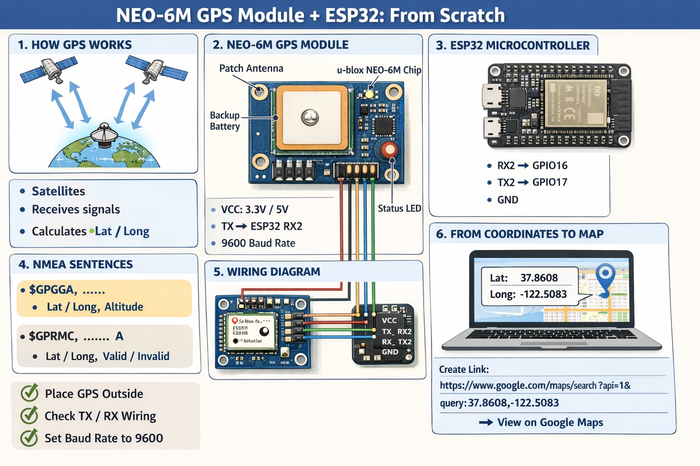
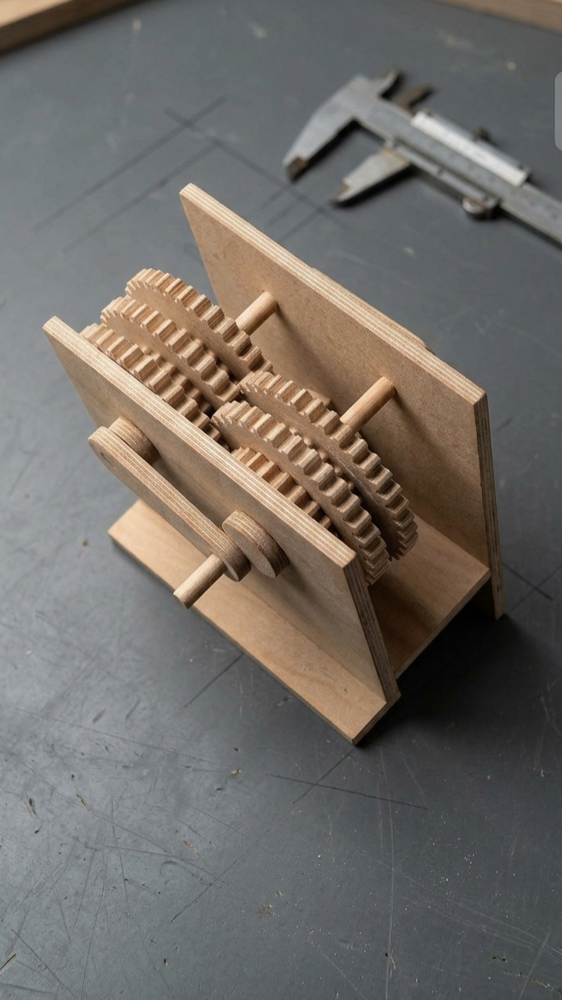

Projects
Aman Band (Off-Grid Tracker)
The Story: A wearable safety band designed for travelers and explorers in off-grid environments with no Wi-Fi or cellular data. With a single trigger, it grabs the user's live coordinates from satellites, turns them into a Google Maps link, and prepares it for emergency dispatch.
- Base Circuit: Configured and wired the core hardware layer, interfacing a u-blox NEO-6M GPS module with an ESP32 microcontroller via hardware serial pins.
- Data Processing: Programmed the firmware to read raw NMEA satellite data sentences at a 9600 baud rate, stripping out the exact latitude and longitude coordinates.
- Link Generation: Engineered the logic to automatically convert raw coordinates into a clean, clickable Google Maps API link for emergency contacts.
- Future Upgrade Scope: Designed the system architecture to transition from a manual button click to autonomous triggering by integrating biometric sensors to monitor sudden changes in heart rate.

Barcode Data Acquisition Subsystem
The Story: This system is used to automatically log real-time attendance by using a mobile phone to scan student ID barcodes, allowing the whole system to run quickly without a heavy operating system.
- Scanning Stage: Integrated a mobile phone to act as a barcode scanner, reliably reading and capturing the data directly from student IDs.
- Processing Stage: Wrote highly efficient, bare-metal C firmware to instantly parse the raw barcode data sent from the mobile device.
- Logging Stage: Programmed the system's logic to dynamically allocate memory, creating dedicated text files for each scanned ID and appending exact real-time timestamps for accurate tracking.

4-DOF Articulated Robotic Arm
The Story: A custom freelance robotic manipulator designed entirely from scratch, bypassing pre-built templates to focus on exact positional tolerance and dynamic capabilities.
- FEA Validation Stage: Executed rigorous Finite Element Analysis on the main waist link to prevent structural yielding under high acceleration and payload forces.
- Kinematic Stage: Conducted advanced motion studies to map and verify the full 4 degrees of freedom workspace and ensure accurate joint tracking.

Multi-Stage Kinematic Gearbox
The Story: Designed and manufactured a high-torque power transmission gearbox to physically bridge the gap between digital modeling and real-world production.
- Design Stage: Modeled a complex parametric gear train with precise axial alignment and structural tolerances using SOLIDWORKS.
- Manufacturing Stage: Produced a working physical prototype via CNC machining to physically assess and validate the gear alignment patterns under dynamic rotational load.


4-Cylinder Inline Engine Assembly
The Story: This mechanism is used to transform the linear force of combustion pistons into smooth, usable rotational engine power.
- Design Stage: Modeled every individual component completely from scratch—including the pistons, wrist pins, connecting rods, and complex counterweighted crankshaft—ensuring exact geometric dimensions.
- Assembly Stage: Mated all moving parts together with precise mechanical constraints to mirror the tight tolerances of a real internal combustion engine.
- Motion Study Stage: Conducted a full kinematic motion study to analyze rotational balance, evaluate velocity changes, and verify zero component interference during high-speed operation.

Solar Structural Integration
The Story: This project is used to securely hold heavy utility-scale solar panels in harsh environments without failing under extreme weather conditions.
- Research Stage: Completed a guided research phase on solar chassis basics alongside an industry mentor at a part-time training company.
- Design Stage: Engineered a robust steel mounting framework optimized for maximum environmental resilience.
- Materials & Rules: Modeled the structural steel geometry in strict compliance with Egyptian Building Codes—applying ECP 205 for steel construction integrity and ECP 201 to safely resist overturning moments from 160 km/h regional winds.

Digital Manufacturing
The Story: This project is used to rapidly transform digital concepts into physical, usable products—such as intricate wooden board games, custom acrylic keychains, and precise plastic structural brackets—using automated manufacturing machines.
- Design Stage: Modeled the precise digital geometry from scratch, utilizing SOLIDWORKS for 3D structural parts and LightBurn for 2D laser-cut profiles.
- 3D Printing (Additive): Imported the 3D CAD files into Ultimaker software to configure custom slicing settings and generate the exact G-code required for physical plastic extrusion.
- CNC Laser (Subtractive): Exported designs into LightBurn, interfaced directly with the CNC machine, and calibrated the specific laser power and travel speed settings needed to cleanly cut and engrave the wood and acrylic materials.